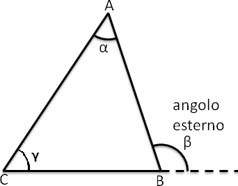
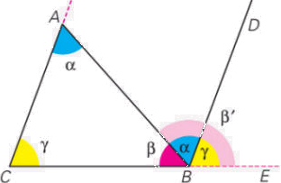

Il Teorema dell'angolo esterno
Teorema. In un triangolo ogni angolo esterno è congruente alla somma dei due angoli interni non adiacenti ad esso.
β = α + γ
Proof. La dimostrazione si ottiene tracciando a partire dal vertice B la parallela al lato AC, in modo da avere due parallele tagliate dalla trasversale AB.
Pertanto si avrà che l'angolo in A è congruente all'angolo AB̂D, in base al teorema delle rette parallele, perchè alterni interni e l'angolo in C è congruente all'angolo DB̂E perchè corrispondenti, quindi l'angolo AB̂E è congruente alla somma dei due angoli interni non adiacenti ad esso. □
Teorema. La somma degli angoli intenri di un triangolo qualunque è congruente a un angolo piatto.
Proof. Nella figura sopra, osserviamo che in B, l'angolo esterno α + γ è adiacente all'angolo β quindi α + γ + β ≌ π. □
Corollario 1. In ogni triangolo rettangolo gli ancoli acuti sono complementari.
Corollario 2. Ogni angolo di un trianolo equilatero è la terza parte di un angolo piatto.
Corollario 3. Due triangoli sono congruenti se hanno ordinatamente congruenti un lato e due angoli qualsiasi (II criterio di congruenza dei triangoli generalizzato).